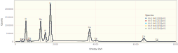
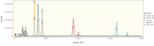
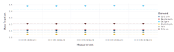
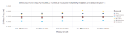
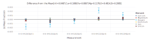

Quantifying K412 using NeXLSpectrum and NeXLMatrixCorrection
Use the NeXLSpectrum to load, plot, fit and report the quantification of a set of K412 spectra.
Loading NeXLSpectrum also automatically makes NeXLCore and NeXLUncertainties available.
Loading the Gadfly library adds plotting support to NeXLSpectrum.
using NeXLSpectrum # Provides spectrum reading and fitting tools
using NeXLMatrixCorrection # Provides `quant` to convert k-ratios to mass fraction.
using Gadfly # Plotting
using DataFrames, Latexify # TablesRead in the Spectra
path = "K412 spectra"
# Load a single spectrum
fe = loadspectrum(joinpath(path, "Fe std.msa"))
# Create a detector model to match it
det = matching(fe, 132.0, 10)
# Now load all the spectra using this detector
unks = (i->loadspectrum(joinpath(path, "III-E K412[$i][4].msa"),det)).(0:4)
al2o3 = loadspectrum(joinpath(path, "Al2O3 std.msa"),det)
caf2 = loadspectrum(joinpath(path, "CaF2 std.msa"),det)
fe = loadspectrum(joinpath(path, "Fe std.msa"),det)
mgo = loadspectrum(joinpath(path, "MgO std.msa"),det)
sio2 = loadspectrum(joinpath(path, "SiO2 std.msa"),det)
# Add carbon coating
map(s->s[:Coating]=Film(pure(n"C"), 30.0e-7), unks)
map(s->s[:Coating]=Film(pure(n"C"), 10.0e-7), (al2o3, caf2, mgo, sio2));(10.0 nm of Pure C, 10.0 nm of Pure C, 10.0 nm of Pure C, 10.0 nm of Pure C
)| Name | BeamEnergy | ProbeCurrent | LiveTime | RealTime | Coating | Integral | Material |
|---|---|---|---|---|---|---|---|
| III-E K412[0][all] | 2e+04 | 1.114 | 235.5 | 286.3 | 30.0 nm of Pure C | 8.079e+06 | K412 |
| III-E K412[1][all] | 2e+04 | 1.114 | 235.4 | 286.2 | 30.0 nm of Pure C | 8.077e+06 | K412 |
| III-E K412[2][all] | 2e+04 | 1.112 | 235.5 | 286.3 | 30.0 nm of Pure C | 8.084e+06 | K412 |
| III-E K412[3][all] | 2e+04 | 1.11 | 235.4 | 286.3 | 30.0 nm of Pure C | 8.087e+06 | K412 |
| III-E K412[4][all] | 2e+04 | 1.11 | 235.4 | 286.2 | 30.0 nm of Pure C | 8.081e+06 | K412 |
| Al2O3 std | 2e+04 | 1.11 | 1172 | 1491 | 10.0 nm of Pure C | 4.974e+07 | Al2O3 |
| CaF2 std | 2e+04 | 1.11 | 1176 | 1456 | 10.0 nm of Pure C | 4.406e+07 | CaF2 |
| Fe std | 2e+04 | 1.11 | 1171 | 1529 | nothing | 5.445e+07 | Fe |
| MgO std | 2e+04 | 1.106 | 1176 | 1496 | 10.0 nm of Pure C | 4.985e+07 | MgO |
| SiO2 std | 2e+04 | 1.11 | 1173 | 1470 | 10.0 nm of Pure C | 4.665e+07 | SiO2 |
Notice that the spectra all have 1) live-time (:LiveTime); 2) probe-current (:ProbeCurrent); 3) take-off angle (:TakeOffAngle); 4) beam energy (:BeamEnergy); and detector (:Detector) properties defined. These properties are necessary for extracting the k-ratios and estimating the composition.
sio2[:LiveTime], sio2[:ProbeCurrent], sio2[:TakeOffAngle], sio2[:BeamEnergy], sio2[:Detector](1173.1648, 1.10989, 0.6108652381980153, 20000.0, BasicEDS(4096, E[ch] = 1.
63032 + 9.99856⋅ch, 132.0 eV @ Mn K-L3, 10, Dict{Shell,Element}(Shell[K] =>
Element(Beryllium),Shell[N] => Element(Plutonium),Shell[M] => Element(Bari
um),Shell[L] => Element(Scandium))))The Unknowns
display(plot(unks..., klms=[n"O",n"Mg",n"Al",n"Si",n"Ca",n"Fe"], xmax=8.0e3))
The Reference Spectra
Build a convenient structure so it is easy to appreciate the necessary information and to splat it into filteredReference.
refs = (
# spectrum, element, composition
( al2o3, n"Al", mat"Al2O3" ), #
( mgo, n"Mg", mat"MgO" ), #
( fe, n"Fe", mat"Fe" ), #
( sio2, n"Si", mat"SiO2" ), #
( sio2, n"O", mat"SiO2" ), #
( caf2, n"Ca", mat"CaF2" ), )
display(plot(al2o3, caf2, fe, mgo, sio2, klms=collect( ref[2] for ref in refs), xmax=8.0e3))
Pre-filter the Reference Spectra
# Build a top-hat filter
filt = buildfilter(NeXLSpectrum.GaussianFilter,det)
# Filter all the reference spectra
frs = mapreduce(ref->filterreference(filt, ref..., withEsc=true), append!, refs)
# frs is now a FilteredReference[] used to fit the unknowns.Fit the Pre-Filtered References to the Unknowns
res= [ fit(unk,filt,frs,false) for unk in unks ]5-element Array{FilterFitResult,1}:
III-E K412[0][all]
III-E K412[1][all]
III-E K412[2][all]
III-E K412[3][all]
III-E K412[4][all]| Spectra | O K-L3 + 1 other | Fe L3-M5 + 11 others | Mg K-L3 + 1 other | Al K-L3 + 1 other | Si K-L3 + 2 others | Ca K-L3 + 3 others | Fe K-L3 + 1 other | Fe K-M3 + 3 others |
|---|---|---|---|---|---|---|---|---|
| III-E K412[0][all] | 0.652 | 0.04245 | 0.1475 | 0.06704 | 0.351 | 0.1922 | 0.06684 | 0.06675 |
| III-E K412[1][all] | 0.654 | 0.04208 | 0.1474 | 0.06677 | 0.3501 | 0.1916 | 0.06706 | 0.06733 |
| III-E K412[2][all] | 0.6545 | 0.04245 | 0.1478 | 0.06713 | 0.3513 | 0.1922 | 0.06686 | 0.06691 |
| III-E K412[3][all] | 0.6589 | 0.04199 | 0.148 | 0.0672 | 0.3521 | 0.1926 | 0.06682 | 0.06768 |
| III-E K412[4][all] | 0.6573 | 0.04136 | 0.1481 | 0.06731 | 0.352 | 0.1922 | 0.06692 | 0.06648 |
Let's take a look at a residual spectrum by plotting one of the FilterFitResult objects.
plot(res[1])Quantify the k-ratios by Matrix Correction
quant = quantify.(res)5-element Array{NeXLMatrixCorrection.IterationResult,1}:
Converged to III-E K412[0][all][Fe=0.0805,Al=0.0482,Si=0.2073,O=0.4297,Mg=
0.1148,Ca=0.1088] in 8 steps
Converged to III-E K412[1][all][Fe=0.0808,Al=0.0480,Si=0.2069,O=0.4302,Mg=
0.1148,Ca=0.1085] in 10 steps
Converged to III-E K412[2][all][Fe=0.0805,Al=0.0483,Si=0.2076,O=0.4309,Mg=
0.1151,Ca=0.1088] in 8 steps
Converged to III-E K412[3][all][Fe=0.0805,Al=0.0483,Si=0.2080,O=0.4333,Mg=
0.1152,Ca=0.1090] in 10 steps
Converged to III-E K412[4][all][Fe=0.0806,Al=0.0484,Si=0.2080,O=0.4323,Mg=
0.1153,Ca=0.1088] in 10 steps| Material | O | Mg | Al | Si | Ca | Fe | Total |
|---|---|---|---|---|---|---|---|
| III-E K412[0][all] | 0.4297 | 0.1148 | 0.04818 | 0.2073 | 0.1088 | 0.08051 | 0.9894 |
| III-E K412[1][all] | 0.4302 | 0.1148 | 0.04801 | 0.2069 | 0.1085 | 0.08077 | 0.9891 |
| III-E K412[2][all] | 0.4309 | 0.1151 | 0.04825 | 0.2076 | 0.1088 | 0.08054 | 0.9912 |
| III-E K412[3][all] | 0.4333 | 0.1152 | 0.0483 | 0.208 | 0.109 | 0.0805 | 0.9944 |
| III-E K412[4][all] | 0.4323 | 0.1153 | 0.04838 | 0.208 | 0.1088 | 0.08061 | 0.9934 |
Finally plot the results as mass fractions.
plot(quant, known=unks[1][:Composition])
Plot the difference from the SRM value.
plot(quant, known=unks[1][:Composition], delta=true)
Plot the difference from the mean value for each element.
plot(quant, delta=true)